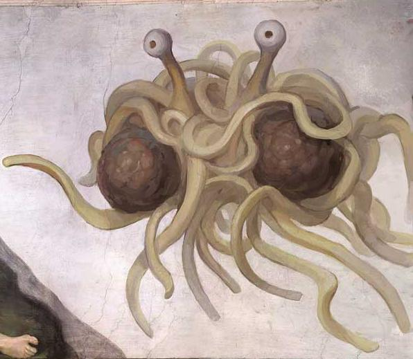
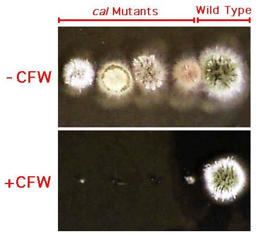
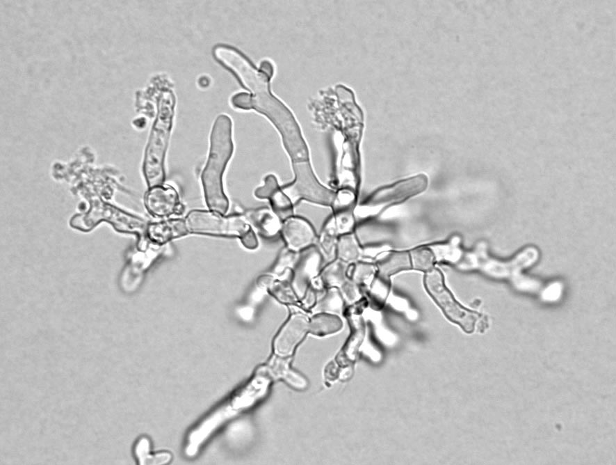

|  |
Terry W. Hill
Professor of Biology
Department of Biology |

 
|
Research Colleagues
Link to Former Research Associates
Goals and Projects
The long-term goal of research in this laboratory is to contribute to our understanding of fungal cell development - especially the areas of tip growth and septation.Our principal current projects focus on the roles played by Protein Kinase C (PKC) and cytoskeletal proteins during polarized cell growth in the filamentous fungus Aspergillus nidulans.
|

Students with strong research interests in cell biology, biochemistry, genetics, or microbiology are encouraged to apply for positions in this lab.Click here for
information on undergrad research |
Jackson-Hayes, L., Z. Atiq, B. Betton, W. T. Freyaldenhoven, L. Myers, E. Olsen, and T. W. Hill. 2019. "Aspergillus nidulans protein kinase C forms a complex with the formin SepA that is involved in apical growth and septation." Fungal Genetics & Biology 122: 21-32.
Hill, T. W., L. Jackson-Hayes, X. Wang, and B. L. Hoge. 2015. "A mutation in the converter subdomain of Aspergillus nidulans MyoB blocks constriction of the actomyosin ring in cytokinesis." Fungal Genetics & Biology 75: 72-83.
Jackson-Hayes, L., T. W. Hill, D. M. Loprete, C. DelBove, J. Shapiro, J. Henley, and O. Dawodu. 2015. "Two amino acid sequences direct Aspergillus nidulans protein kinase C (PkcA) localization to hyphal apices and septation sites." Mycologia 107: 452-459.
Gremillion, S. K., S. D. Harris, L. Jackson-Hayes, S. G. W. Kaminskyj, D. M. Loprete, A. C. Gauthier, S. Mercer, A. J. Ravita, and T. W. Hill. 2014. "Mutations in proteins of the Conserved Oligomeric Golgi complex affect polarity, cell wall structure, and glycosylation in the filamentous fungus Aspergillus nidulans." Fungal Genetics & Biology 73: 69-82.
Jackson-Hayes, L., T. W. Hill, D. M. Loprete, B. S. Gordon, C. J. Groover, L. R. Johnson, and S. A. Martin. 2010. "GDP-mannose transporter paralogues play distinct roles in Aspergillus nidulans cell wall integrity." Mycologia 102: 305-310.
Jackson-Hayes, L., T. W. Hill, D. M. Loprete, L. M. Fay, B. S. Gordon, S. A. Nkashama, R. K. Patel, and C. V. Sartain. 2008. "Two GDP-mannose transporters contribute to hyphal form and cell wall integrity in Aspergillus nidulans." Microbiology 154: 2037-2047.
Teepe, A. G., D. M. Loprete, Z.-M. He, T. A. Hoggard, and T. W. Hill. 2007. "The protein kinase C orthologue PkcA plays a role in cell wall integrity and polarized growth in Aspergillus nidulans". Fungal Genetics & Biology 44: 554-562.
Hill, T. W., D. M. Loprete, M. Momany, Y. Ha, L. M. Harsch, J. A. Livesay, A. Mirchandani, J. J. Murdock, M. J. Vaughan, and M. B. Watt. 2006. "Isolation of cell wall mutants in Aspergillus nidulans by screening for hypersensitivity to Calcofluor White". Mycologia 98: 400-410.
Momany, M., R. Lindsey, T. W. Hill, E. A. Richardson, C. A. Momany, M. Pedreira, G. M. Guest, J. F. Fisher, R. B. Hessler, and K. A. Roberts. 2004. "The Aspergillus fumigatus cell wall is organized in domains that are remodeled during polarity establishment". Microbiology 150: 3261-3268.
Hill, T. W. and E. Kafer. 2001. "Improved protocols for Aspergillus minimal medium: Trace element and minimal medium salt stock solutions". Fungal Genetics Newsletter 48: 20-21.
Reichard, U., G. T. Cole, T. W. Hill, R. Rüchel, and M. Monod. 2000.
"Molecular characterization and influence on fungal development of ALP2, a novel
serine proteinase from Aspergillus fumigatus". International Journal of
Medical Microbiology 290: 549-558.